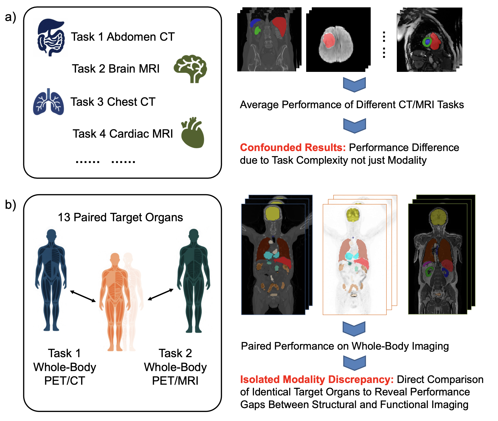
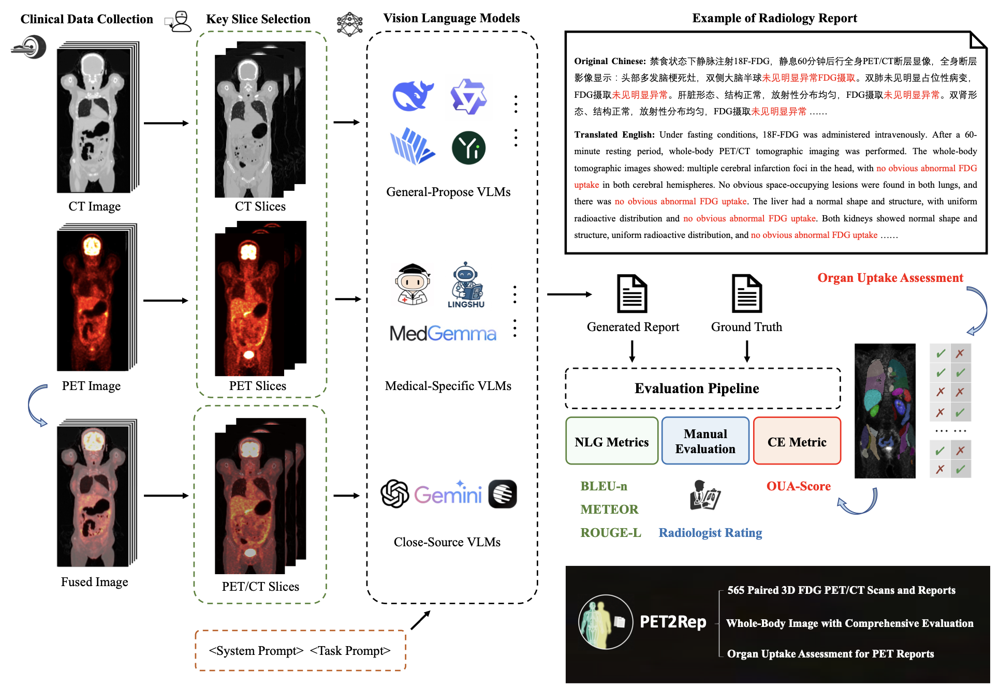
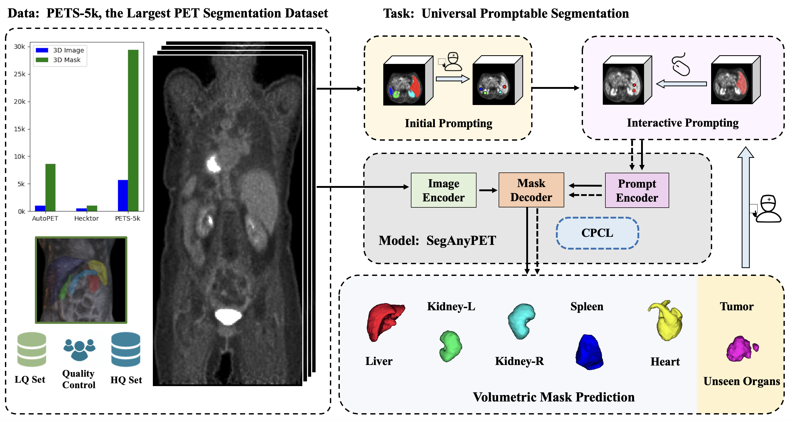
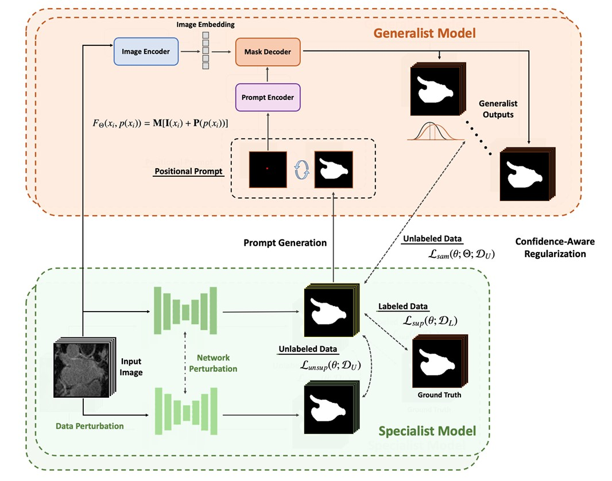
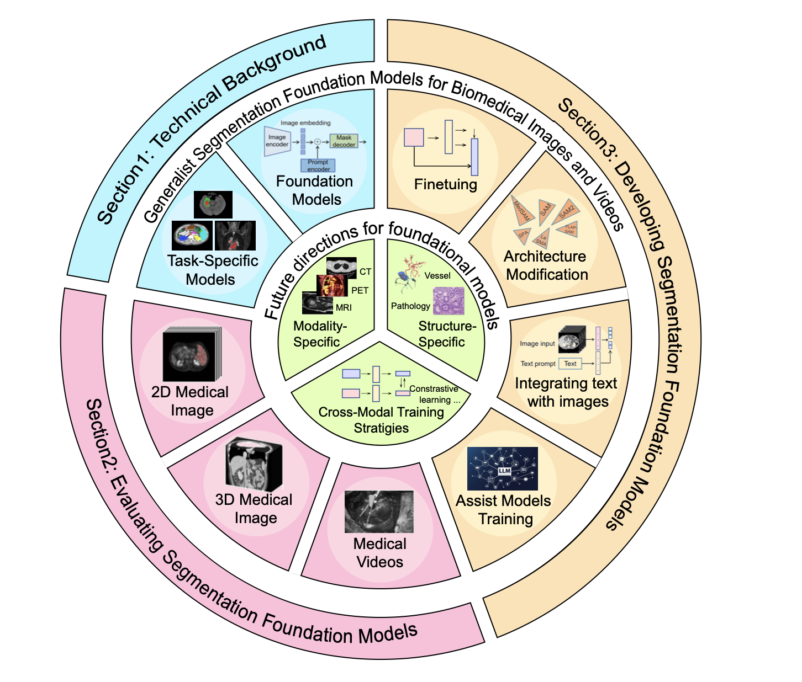
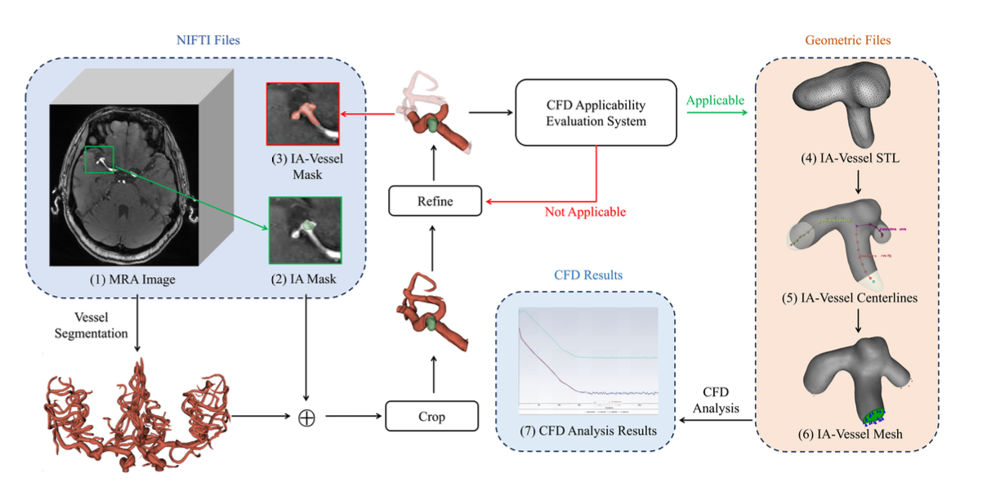
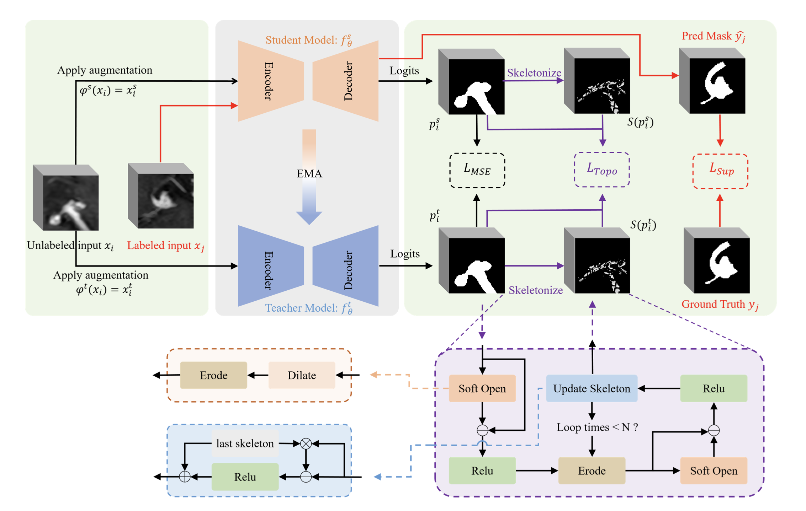
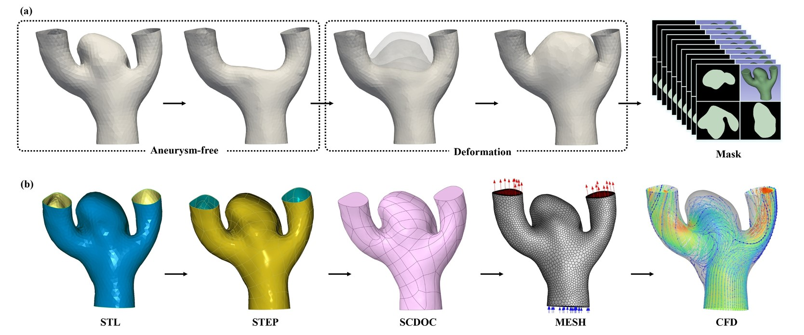
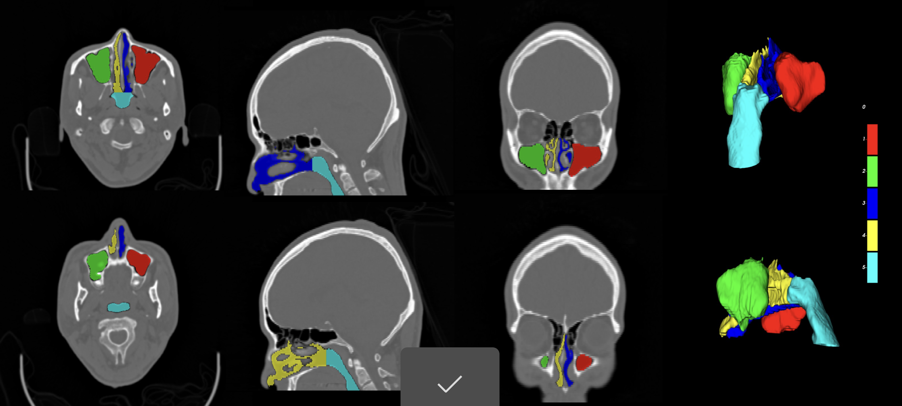
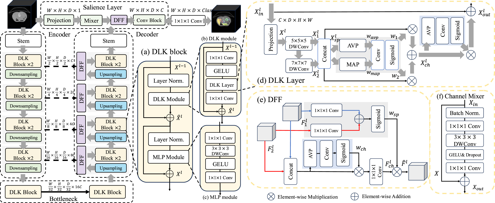

Yichi Zhang
 |
Github | Google Scholar | Semantic Scholar | ResearchGate |
Research Interests
My research interests lie in the interdisciplinary field of artificial intelligence and healthcare. My long-term research goal is to build foundation and generalized AI models to unlock new possibilities in medical practice. I have published 20+ papers in prestigious conferences and journals and these works were cited 2400+ times. Currently, my research focus on 1) Developing vision/language foundation models applicable for efficient medical image analysis, with a particular focus on molecular imaging applications like PET image analysis. 2) Deploying AI techniques in real-world biomedicine and healthcare scenarios. I strongly believe in the power of interdisciplinary collaboration and its potential in fostering influential research outcomes. If you are interested in collaborating on research projects, offering internship opportunities or exchange programs, I would be thrilled to connect with you.Recent News
[2026.1] 🏢 Attending AAAI 2026. Looking forward to seeing you in Singapore 🇸🇬.[2025.11] 🎉 Our work PET2Rep on whole-body PET/CT radiology report generation benchmark was accepted by AAAI 2026, thanks to all co-authors.
[2025.10] 🏢 Attending ICCV 2025. Looking forward to seeing you in Holonunu, Hawai'i.
[2025.10] 🎉 Two papers were accepted by Radiotherapy and Oncology and Biomedical Signal Processing and Control.
[2025.9] 🎙️ Invited to give a talk at Shanghai Foundation Model Innovation Center (模速空间).
[2025.9] ✨ Our project SAM4MIS received the 1000th star, a milestone moment for us!
[2025.8] 💡 We release PET2Rep, the first whole-body PET/CT image-report dataset for benchmarking VLMs for radiology report generation.
[2025.8] ✨ Some of my works are ranked among the most-cited papers (2020-2025) by Google Scholar Metrics [1], [2].
[2025.7] 🎉 Our work SemiSAM+ on foundation model-driven semi-supervised medical image segmentation was accepted by Medical Image Analysis, thanks to all co-authors.
[2025.6] 🎉 Our work SegAnyPET on foundation model for universal PET segmentation was accepted by ICCV 2025, thanks to all co-authors.
Selected Publications
Foundation Models for Medical Imaging
|  |
|
|  |
|
|  |
|
|  |
|
 |
|
|  |
|
 |
|
 |
|
Data/Label-Efficient Learning for Medical Image Analysis
 |
|
 |
|
 |
|
 |
|
 |
|
Artificial Intelligence for Computational Fluid Dynamics Applications
|  |
|
|  |
|
|  |
|
Dataset/Benchmark for Biomedical Imaging and Healthcare Applications
|  |
|
 |
|
 |
|
 |
|
Model-Centric Advancements for Medical Image Analysis
|  |
|
 |
|
 |
|
 |
|
 |
|
Academic Services
Journal ReviewsNature Methods
Medical Image Analysis
IEEE Transactions on Image Processing
IEEE Transactions on Medical Imaging
IEEE Transactions On Circuits and Systems For Video Technology
IEEE Journal of Biomedical and Health Informatics
IEEE Signal Processing Letters
Information Fusion
Artificial Intelligence in Medicine
Artificial Intelligence Review
Pattern Recognition
Neural Networks
Knowledge-Based Systems
Engineering Applications of Artificial Intelligence
Computerized Medical Imaging and Graphics
Biomedical Signal Processing and Control
Neurocomputing
Medical Physics
Cancer Medicine
Digital Signal Processing
Scientific Reports
BMC Medical Imaging
BMC Oral Health
AI Open
Frontiers in Oncology
Frontiers in Medicine
International Journal of Imaging Systems and Technology
International Journal of Computer Assisted Radiology and Surgery
Journal of Imaging Informatics in Medicine
Systems Science & Control Engineering
Mathematical Biosciences and Engineering
International Journal of Image and Graphics
International Conference on Learning Representations (ICLR'25-26)
IEEE/CVF Conference on Computer Vision and Pattern Recognition (CVPR'24-26)
IEEE/CVF International Conference on Computer Vision (ICCV'25)
IEEE/CVF Winter Conference on Applications of Computer Vision (WACV'25)
Europoean Conference on Computer Vision (ECCV'26)
International Conference on Medical Image Computing and Computer-Assisted Intervention (MICCAI'24-26)
AAAI Conference on Artificial Intelligence (AAAI'25-26)
British Machine Vision Conference (BMVC'26)
International Joint Conference on Artificial Intelligence (IJCAI'25)
International Conference on Medical Imaging with Deep Learning (MIDL'22-24)
International Conference on Artificial Neural Networks (ICANN'24)
IEEE International Conference on Systems, Man, and Cybernetics (SMC'25)
IEEE International Symposium on Biomedical Imaging (ISBI'24)
Honors & Awards
[2025] Doctoral Student Forum Award on Data Science and Brain-Inspired Intelligence, Fudan University
[2024] IEEE Transactions on Medical Imaging (TMI) Distinguished Reviewer
[2023] Doctoral Student Forum Award on Data Science and Brain-Inspired Intelligence, Fudan University
[2023] Excellent Graduate Award of Beijing
[2023] Excellent Master Thesis of Beihang University
[2022] Finalist of Excellent Graduate Student of Beihang University
[2022] Outstanding Graduate Student Award 2022
[2021] National Scholarship in China (Top 1.6%)
[2020] Graduate President Scholarship for Science and Technology Competition (10 every year in Beihang University)
[2020] Scholarship of Outstanding Graduate Students
[2020] Champion, Myocardial Infarction Segmentation (EMIDEC Challenge in MICCAI 2020)
[2019] First Prize of National Biomedical Engineering Innovation and Design Contest of China (Top 5%)
[2018] Special Prize of Feng Ru Cup Competition of Innovation, Beihang University (Top 0.3%)